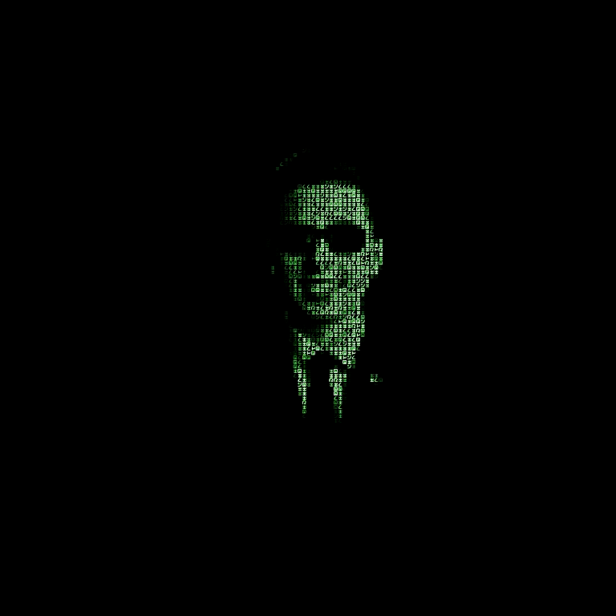
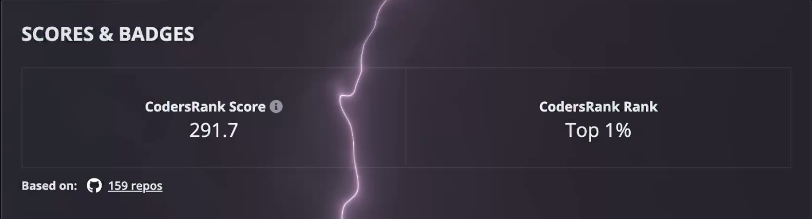

The identity chart
CY83R-3X71NC710N
Cybersecurity Researcher and Developer, specialising in offensive security, OS internals and AI driven tooling, actively studying penetration testing, bug bounty hunting and zero day research, with the stated trajectory toward Tier 1 exploit development and advanced penetration testing.
About and experience
Fascination with how systems work pursued since age 12, five years in systems engineering and offensive security work, building and breaking held as one practice.
Founding Security Engineer (Intern), Maze3 Studios LLC, from July 2025: sole responsibility for offensive and defensive research at a new game studio.
Achievements
- NSA Codebreaker Challenge 2023 to 2024: placed 72 out of more than 450 institutions, solo against university teams, Level 7 inside the first 10 days and first on the institutional leaderboard, the school's first participation in the programme.
- CyberStart America 2022 to 2024: National Cyber Scholar with Honors three years running, top 1 percent, 12,000 dollars in scholarships.
- GIAC Advisory Board invitation.
- FBI TEAM programme selection.
Education and certifications
- GIAC Security Essentials (GSEC)
- GIAC Foundational Cybersecurity Technologies (GFACT)
- AP Scholar honour
- Dual Business and Computer Science award in a graduating class of about 1,000
- GitHub Developer Program membership
Featured projects
ShadowStrike OS (private): hardened Fedora base with the Pop!_OS COSMIC tiling window manager and a BlackArch Docker container.
Eclipse Shield: Gemini task analysis with browser extension filtering and its layered defence of UFW, Fail2ban, Nginx, Gunicorn and Flask.
Event_Zero: the autonomous malware analysis engine in ephemeral BlackArch containers using Radare2, Ghidra, Frida, Yara, Wireshark, Volatility and GDB.
Open source contributions, as chart notes: spotify_to_ytmusic pull request 117, swayfx pull request 406, the SillyTavern speech recognition heartbeat fix.
Expertise and hobbies
Cybersecurity: Offensive Security (Red Teaming), Penetration Testing, Social Engineering, API Security, OSINT, Reverse Engineering (Ghidra), System Hardening, Digital Forensics.
Development: Python (Advanced), C, Nix, Bash, Web Development (Frontend/Backend, UI/UX), AI/ML Tooling (LLM Integration, API Automation), Git, CI/CD.
Systems and Infrastructure: Linux/Windows/macOS Internals, Custom OS Development, Cloud Security, Virtualization (VMware, Parallels, QEMU, UTM), Docker, Networking (VPNs, OpSec).


CodersRank profile: profile.codersrank.io/user/CY83R-3X71NC710N
Hobbies: DJ work, music production, guitar played live and unrecorded, Krav Maga ambition, firearms training, fitness, biking, defensive driving, and collecting watches, sunglasses and black tailored suits.